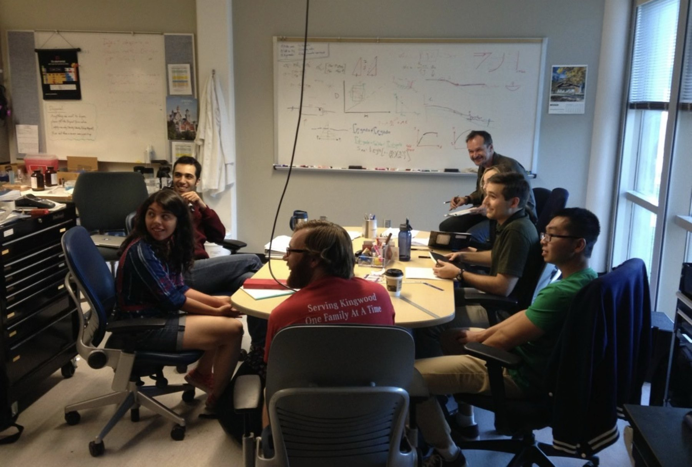
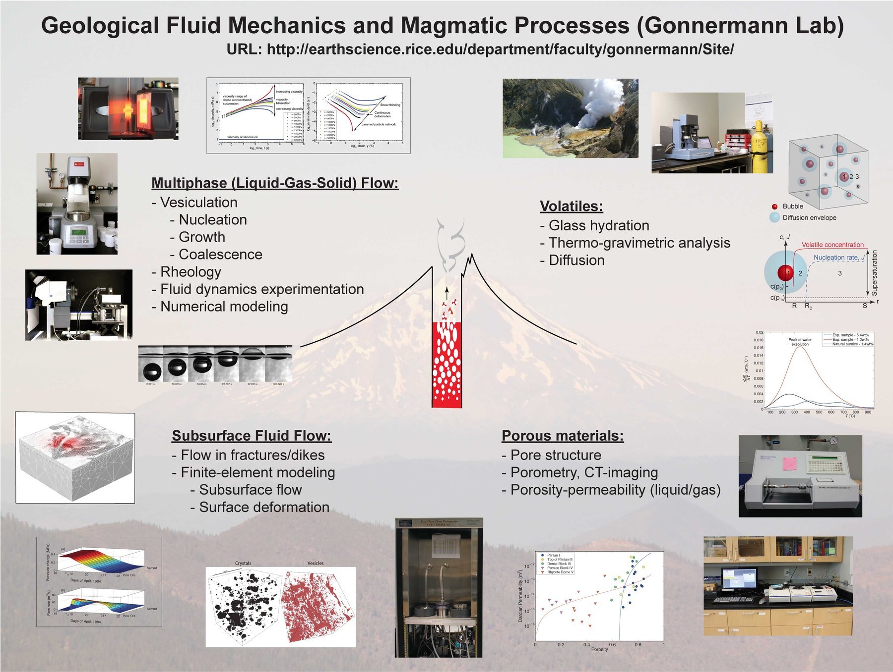

Lab
The Rice Geofluids Lab is designed to facilitate measurements of physical properties, as well as physical modeling of fluid dynamical and other processes of importance in Earth Science. Illustrative examples of the work we do in the lab are provided below.


The Whiteboard
Adrian Lenardic, who appears in some of these whiteboard photos, and Helge Gonnermann taught many topical seminars together.


Anton Paar MCR 301 Rheometer


Microimaging of Experiments


TA Instruments Thermogravimetric Analyzer (TGA)
This instrument is used to measure the temperature-dependent loss of volatiles from volcanic glasses.

Close-up of TGA

Decompression system
This system is used to study bubble coalescence during bubble growth in viscous liquids.